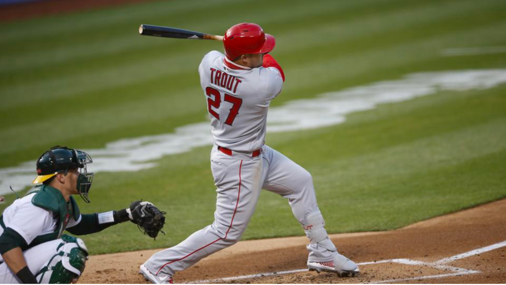

Hypothesis Testing MLB Hitters in Day and Night Games
Prior to 1935, all Major League Baseball games were played during the afternoon. When the night game was introduced, it added a new aspect to the sport. Since day games are less convenient for spectators and certainly…